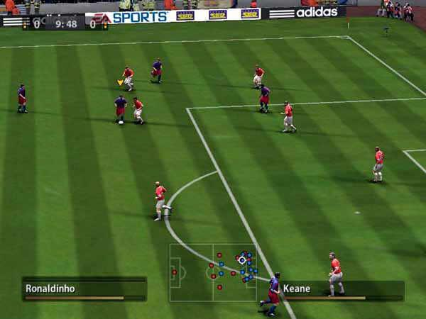
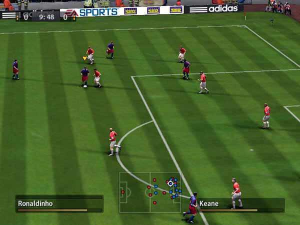

Videojuegos:
Un asunto serio
Departamento de Automática
Universidad de Alcalá
Percepciones sobre los videojuegos
Mi madre
Mis compañeros
Mi novia
Los medios
Mis alumnos
... sólo unos pocos ...
... especialmente de primero ...
Los videojuegos son interesantes por tres motivos
(En mi modesta opinión)
Motivo 1: Nos enseñan cómo somos
Videojuegos = Video + juegos
Jugar es aprender
Los adultos aprenden
... y se respetan
Los videojuegos digitalizan el juego
Los videojuegos digitalizan el juego
 

Motivo 2: Arte
Artes clásicas
- Arquitectura
- Escultura
- Pintura
- Música
- Danza
- Poesía/literatura
- Cine
¿Arte contemporáneo?
- Arte digital
- Blogs
- Microblogging
- Series TV
- Videojuegos

Motivo 3: Técnicamente apasionantes
Perfiles profesionales artísticos
Diseñador de niveles, artista conceptual, modelador, artista de texturas, iluminador, animador, diseñador de sonido, actor, músico, actor de captura de movimiento, ...
Perfiles profesionales técnicos
Programador, IA, testeador, física, redes, sonido, 3D, ...
Áreas de la informática
- Programación
- Programación gráfica
- Algoritmia
- Ingeniería del software
- Bases de datos
- Microprocesadores
- Periféricos
- Redes
- Interfaces hombre-máquina
- Inteligencia Artificial
Inteligencia Artificial en Videojuegos
- Comportamiento de NPCs
- Generación procidemental de contenidos
Número 3 • Septiembre 2015
- "An Analytic and Psychometric Evaluation of Dynamic Game Adaption for Increasing Session-Level Retention in Casual Games"
- "Detecting Predatory Behavior in Game Chats"
- "Player Preference and Style in a Leading Mobile Card Game"
- "Thinking Style and Team Competition Game Performance and Enjoyment"
- "Churn Prediction in Online Games Using Players’ Login Records: A Frequency Analysis Approach"
- "Clustering Game Behavior Data"
- "Postprocessing Gameplay Metrics for Gameplay Performance Segmentation Based on Audiovisual Analysis"
- "Past Our Prime: A Study of Age and Play Style Development in Battlefield 3"
- "On Learning From Game Annotations"
Dos ámbitos
- El jugador
- El juego